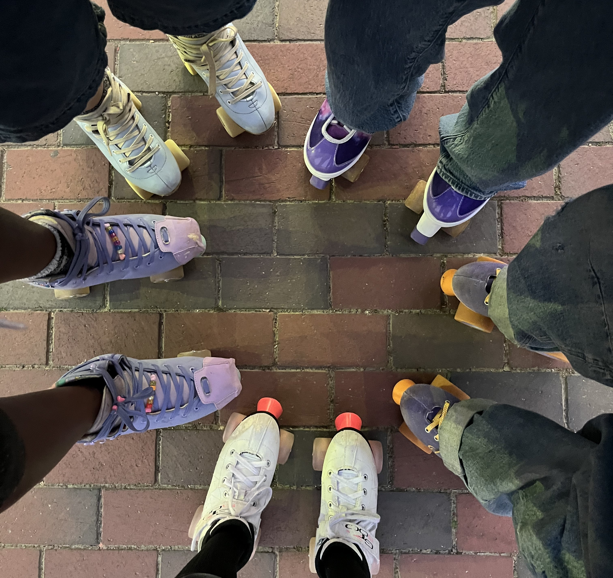

Why Roller Skating?
Roller skating is a fun and active hobby that has grown in popularity through social media, especially after COVID-19. Roller skating can be done for cardio, transportation, to roll on rinks, to dance, or to go to skateparks.
This website introduces the basics of roller skating for beginners. The true best best way to learn how to roller skate is through experience. This site can at least help you mentally prepare

What You Need to Know First
Balance
The first skill in roller skating is learning how to stand on roller skates. Keep your knees bent and be mindful of where you center of gravity is.
Safety Gear
Safety gear can help boost confidence in trying roller skatings. Items like a helmet, wrist guards, knee pads, and elbow pads are highly suggested.
Practice
Roller skating takes patience. Like other sports, it is helpful to run different drills to improve your roller skating skills.